Vectors
This is a vector:

A vector has magnitude (size) and direction:

The length of the line shows its magnitude and the arrowhead points in the direction.
We can add two vectors by joining them head-to-tail:
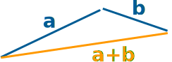
And it doesn't matter which order we add them, we get the same result:

Example: A plane is flying along, pointing North, but there is a wind coming from the North-West.
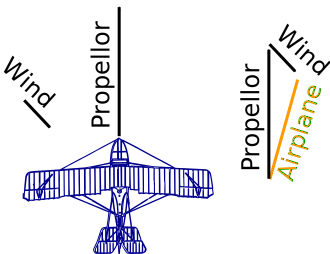
The two vectors (the velocity caused by the propeller, and the velocity of the wind) result in a slightly slower ground speed heading a little East of North.
If you watched the plane from the ground it would seem to be slipping sideways a little.
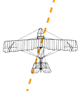
Have you ever seen that happen? Maybe you have seen birds struggling against a strong wind that seem to fly sideways. Vectors help explain that.
Velocity, acceleration, force and many other things are vectors.
Subtracting
We can also subtract one vector from another:
- first we reverse the direction of the vector we want to subtract,
- then add them as usual:

a − b
Notation
A vector is often written in bold, like a or b.
| A vector can also be written as the letters of its head and tail with an arrow above it, like this: |
 |
Calculations
Now ... how do we do the calculations?
The most common way is to first break up vectors into x and y parts, like this:

The vector a is broken up into
the two vectors ax and ay
(We see later how to do this.)
Adding Vectors
We can then add vectors by adding the x parts and adding the y parts:

The vector (8, 13) and the vector (26, 7) add up to the vector (34, 20)
Example: add the vectors a = (8, 13) and b = (26, 7)
c = a + b
c = (8, 13) + (26, 7) = (8+26, 13+7) = (34, 20)
When we break up a vector like that, each part is called a component:
Subtracting Vectors
To subtract, first reverse the vector we want to subtract, then add.
Example: subtract k = (4, 5) from v = (12, 2)
a = v + −k
a = (12, 2) + −(4, 5) = (12, 2) + (−4, −5) = (12−4, 2−5) = (8, −3)
Magnitude of a Vector
The magnitude of a vector is shown by two vertical bars on either side of the vector:
|a|
OR it can be written with double vertical bars (so as not to confuse it with absolute value):
||a||
We use Pythagoras' theorem to calculate it:
|a| = √( x2 + y2 )
Example: what is the magnitude of the vector b = (6, 8) ?
|b| = √( 62 + 82) = √( 36+64) = √100 = 10
A vector with magnitude 1 is called a Unit Vector.
Vector vs Scalar
A scalar has magnitude (size) only.
Scalar: just a number (like 7 or −0.32) ... definitely not a vector.
A vector has magnitude and direction, and is often written in bold, so we know it is not a scalar:
- so c is a vector, it has magnitude and direction
- but c is just a value, like 3 or 12.4
Example: kb is actually the scalar k times the vector b.
Multiplying a Vector by a Scalar
When we multiply a vector by a scalar it is called "scaling" a vector, because we change how big or small the vector is.
Example: multiply the vector m = (7, 3) by the scalar 3
 |
a = 3m = (3×7, 3×3) = (21, 9) |
It still points in the same direction, but is 3 times longer
(And now you know why numbers are called "scalars", because they "scale" the vector up or down.)
Multiplying a Vector by a Vector (Dot Product and Cross Product)
 |
How do we multiply two vectors together? There is more than one way!
(Read those pages for more details.) |
More Than 2 Dimensions
Vectors also work perfectly well in 3 or more dimensions:
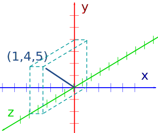
The vector (1, 4, 5)
Example: add the vectors a = (3, 7, 4) and b = (2, 9, 11)
c = a + b
c = (3, 7, 4) + (2, 9, 11) = (3+2, 7+9, 4+11) = (5, 16, 15)
Example: what is the magnitude of the vector w = (1, −2, 3) ?
|w| = √( 12 + (−2)2 + 32 ) = √( 1+4+9) = √14
Here is an example with 4 dimensions (but it is hard to draw!):
Example: subtract (1, 2, 3, 4) from (3, 3, 3, 3)
(3, 3, 3, 3) + −(1, 2, 3, 4)
= (3, 3, 3, 3) + (−1,−2,−3,−4)
= (3−1, 3−2, 3−3, 3−4)
= (2, 1, 0, −1)
Magnitude and Direction
We may know a vector's magnitude and direction, but want its x and y lengths (or vice versa):
| 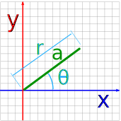 | <=> | 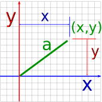 |
| Vector a in Polar Coordinates |
Vector a in Cartesian Coordinates |
You can read how to convert them at Polar and Cartesian Coordinates, but here is a quick summary:
| From Polar Coordinates (r,θ) to Cartesian Coordinates (x,y) |
From Cartesian Coordinates (x,y) to Polar Coordinates (r,θ) |
|
|---|---|---|
|
|
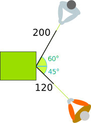
An Example
Sam and Alex are pulling a box.
- Sam pulls with 200 Newtons of force at 60°
- Alex pulls with 120 Newtons of force at 45° as shown
What is the combined force, and its direction?
Let us add the two vectors head to tail:
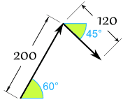
First convert from polar to Cartesian (to 2 decimals):
Sam's Vector:
- x = r × cos( θ ) = 200 × cos(60°) = 200 × 0.5 = 100
- y = r × sin( θ ) = 200 × sin(60°) = 200 × 0.8660 = 173.21
Alex's Vector:
- x = r × cos( θ ) = 120 × cos(−45°) = 120 × 0.7071 = 84.85
- y = r × sin( θ ) = 120 × sin(−45°) = 120 × -0.7071 = −84.85
Now we have:
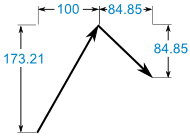
Add them:
(100, 173.21) + (84.85, −84.85) = (184.85, 88.36)
That answer is valid, but let's convert back to polar as the question was in polar:
- r = √ ( x2 + y2 ) = √ ( 184.852 + 88.362 ) = 204.88
- θ = tan-1 ( y / x ) = tan-1 ( 88.36 / 184.85 ) = 25.5°
And we have this (rounded) result:
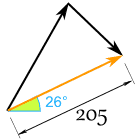
And it looks like this for Sam and Alex:
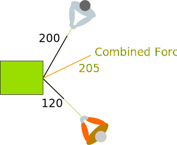
They might get a better result if they were shoulder-to-shoulder!